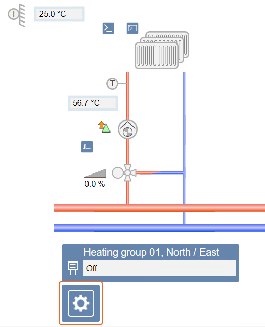
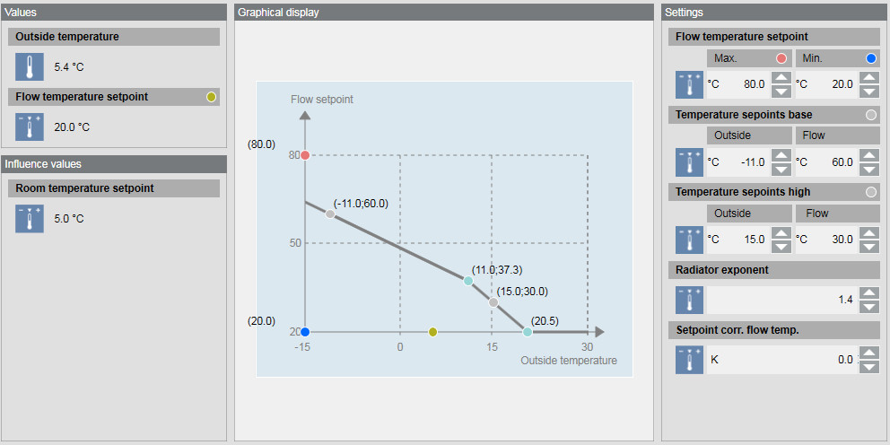
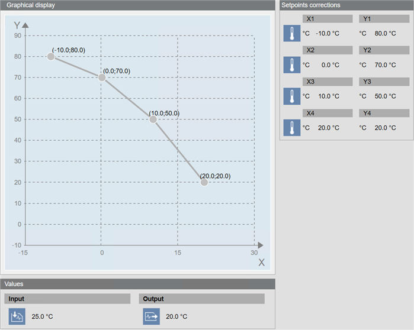

Heating
The image below shows a heating group with an outdoor sensor and a flow temperature sensor.

Operating the Heating Group
Scenario: The heating group has to be set to another status (On, Off, or Automatic) because of a maintenance interval.
- In System Browser, select Graphics.
- Click
 for the desired graphics page.
for the desired graphics page. - The selected graphics page opens.
- Select the operator symbol for the heating group.
- Right-click and select Show Status and Commands.
- Select the Command status property.
- Set to manual:
a. Click Manual.
b. In the drop-down list, select Off or On.
c. Click Send. - Set to automatic:
a. Click Auto. - Click to close the pane.
Operating the Heating Curve Based on Room Temperature
Scenario: The average room temperature is too hot. To reduce the room temperature, you can change different parameters on the heating curve.

- Click on the graphics page.
- On the graphic, select an option:
- Temperature setpoints base, outside or flow
- Temperature setpoints high, outside or flow
- Radiator exponent
- Setpoint correction to flow temperature
- Flow temperature setpoint, Max or Min (It is not recommended to change those parameters.)
- Click Previous
 .
.
- The heating groups display again.
Operating the Heating Curve Based on Outside Air Temperature
Scenario: The average room temperature is too hot. To reduce the room temperature, you can change different parameters on the heating curve.

- Click on the graphics page.
- The heating curve displays.
- On the graphics page, select an option:
- X1 through X4
- Y1 through Y4
- Click Previous .
- The heating groups display again.